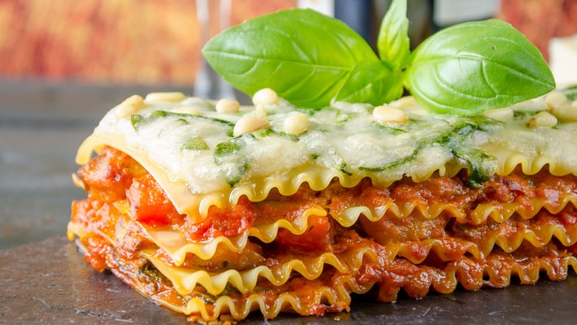

Lasanha Vegetariana

Ingredientes
- Massa para lasanha (pré-cozida)
- 1 maço de espinafre, lavado, aferventado, bem picadinho e bem espremido
- 2 cenouras raladas a Juliana
- 1 abobrinha menina ralada a Juliana
- 1 cebola grande
- 3 dentes de alho
- 2 folhas de louro
- 3 cravos
- 2 colheres de (sopa) de manteiga
- 3 colheres de (sopa) de óleo
- 1 litro de leite
- 2 colheres de (sopa) de farinha de trigo
- 1 lata (ou caixinha) de creme de leite
- 200 gr de queijo mussarela
- sal a gosto
Preparo
- Refogar o espinafre com óleo e alho e sal a gosto e reservar.
- Refogar as cenouras com óleo e alho e sal a gosto e reservar.
- Refogar a abobrinha com óleo e alho e sal a gosto e reservar.
- Colocar o leite para ferver em fogo baixo com a cebola cortada em 4 partes, a manteiga, o louro, o cravo e sal a gosto.
- Após ferver, em fogo baixo, por aproximadamente 5 minutos, retirar o louro, os cravos e a cebola, colocar a farinha de trigo, dissolvida em água e deixe cozinhar mexendo bem, fazendo assim o molho branco.
- Colocar o creme de leite e desligar o fogo.
- Se o molho branco ficou empelotado, coloque no liquidificador, bata e ficará maravilhoso.
- Montar a lasanha começando com molho branco, massa, espinafre, queijo, molho branco, massa, abobrinha, molho branco, massa, cenoura, molho branco, queijo e por aí vai, até acabar os ingredientes.
- Leve ao forno por uns 40 minutos ou até que borbulhe.
Return to main page